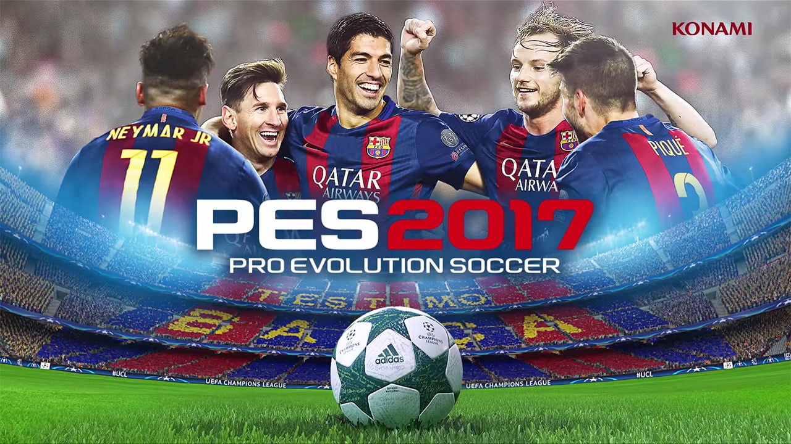
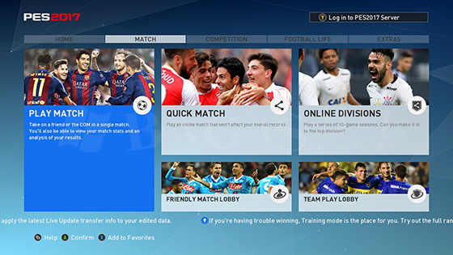
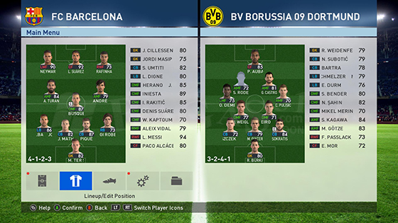
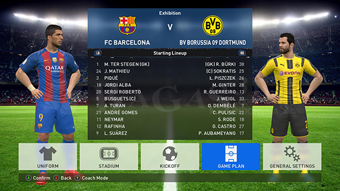
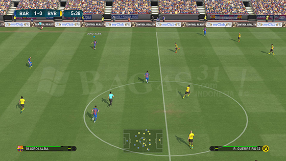
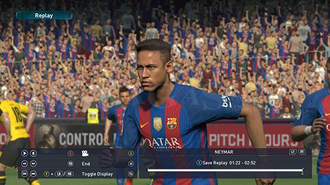

Pro Evolution Soccer 2017

MINIMUM SYSTEM REQUIREMENTS:
- Windows 10, 8.1, 8, 7 SP1, Vista SP2
- Intel Core2 Duo 1.8GHz / AMD Athlon Ⅱ X2 240 or equivalent processor
- 1 GB RAM
- DirectX 9.0c compatible video card. 1024MB Pixel Shader 3.0 (NVIDIA GeForce 8800 / AMD/ATI Radeon
- X1600 / Intel HD Graphics 3000 or better)
RECOMMENDED SYSTEM REQUIREMENTS:
- Windows 10, 8.1, 8, 7 SP1, Vista SP2
- Intel Core i3 530 / AMD Phenom Ⅱ X4 925 or equivalent processor
- 2 GB RAM
- DirectX 9.0c compatible video card. 1024MB Pixel Shader 3.0 (NVIDIA GeForce GTX 260 / AMD/ATI Radeon
- HD4850 / Intel HD Graphics 4000 or better)





Link Download
Google Drive
Cara Install
- Pertama, download filenya
- kemudian extract Filenya
- Setelah itu klik setup dan install gamenya sampai selesai
- Jalankan Game "PES17.exe"
Semoga Bermanfaat :)